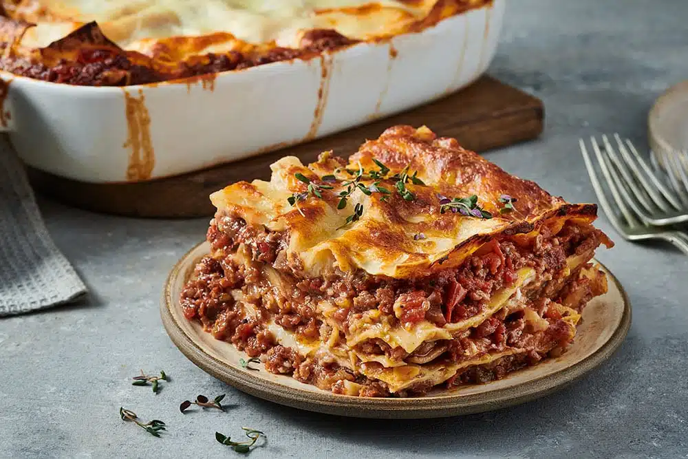

Lasagna

Description
Lasagna has four main components - a meat and tomato sauce (British
Bolognese Sauce), a white sauce with a bit of cheese in it, based on a
classic bechamel sauce, layers of pasta sheets, and a molten cheese
topping.
Ingredients
Bolognese sauce
- 500 grams minced beef
- 400 grams peeled plum tomatoes
- tbsp tomato puree
1
- 1 medium onion
- 1 medium carrot
- 1 stick celery
- 250 ml beef stock
- 250 ml red wine
- 1 tsp ground black pepper
- 1 tsp dried basil
- 1 tsp dried oregano
White sauce
- 500 ml milk
- 1 medium onion
- 1 tbsp unsalted butter
- 1 tbsp plain white flour
- 200 grams cheese, grated
- 2 bay leaves
Steps
To make the bolognese sauce
-
Peel and dice the onion, top, tail and grate the carrot, and finely dice
the celery.
-
In a large frying pan or cast-iron casserole, gently sweat the veggies
in oil over medium heat. Cut the bacon into small squares. After about
10 minutes, add the minced meat and the bacon to the pan. Turn up the
heat a bit and get the meats browned all over. Add the wine and boil
rapidly, then add the stock, tomatoes, tomato puree, herbs and salt and
pepper. Turn down the heat to simmer.
-
Now for a really deep tasting sauce, you need to cook it for 3 hours.
You can do this in the casserole on the lowest possible heat on your
stovetop or in the oven. Or you could do it in a slow cooker for about 6
hours. Keep the lid off so the liquid level can reduce and concentrate
the flavour. Now and again, check that the sauce isn't getting too dry -
add more stock or water if it is.
-
When cooked, taste the sauce and add salt if necessary. If the sauce is
too runny (it should be moist but not sitting in liquid), turn the heat
on full and reduce the excess liquid. You can use this sauce straight
away, but it does improve if you leave it overnight.
To make the white sauce
-
While the meat sauce is cooking, infuse the milk with onion. This step
is optional but I do like the oniony flavour.
-
Cut the onion into quarters, put them in a jug with the milk and
microwave it for 2 minutes. Let it stand until needed.
-
In a small saucepan, melt the butter on medium heat and sift in the
flour a bit at a time. Keep stirring until the flour is all absorbed
(this is called a roux).
-
Strain the infused milk into the roux. Discard the onion. Stir the milk
into the roux and cook for a few minutes until it thickens. Add the
mustard, stir well, and then add half of the cheese.
-
Keep stirring until the cheese has melted, then remove the sauce from
the heat.
Assemble the Lasagna
-
Heat your oven to 180°C (356°F) for a fan/convection oven or air fryer,
200°C (392°F) conventional, gas 5. You'll need an ovenproof casserole
dish or similar. I prefer my layers of pasta to fit snugly up to the
sides of the dish, and this involves a bit of cutting to shape. You
can't cut dried pasta without it shattering, so I soak the sheets in
boiling water for five minutes to make them pliable. You'll need enough
sheets of pasta to create 3 layers in your dish. If your pasta is
pre-cooked, you can use it after soaking and cutting. For uncooked dried
pasta, follow the manufacturer's instructions.
-
Butter the insides and bottom of your dish. Spread a thin layer of the
bolognese sauce on the bottom. Cover this with a layer of pasta sheets,
cutting them as necessary to fit the dish, and trying not to overlap the
sheets. Spread another layer of bolognese sauce, and then a layer of the
white sauce. Cover this with a second layer of pasta, and cover that
with the remaining bolognese sauce.
-
Add the final layer of pasta, the remainder of the white sauce, and
sprinkle the second half of the cheese evenly on top.
Bake it
Bake the lasagna for about 30 minutes, until the cheese on top is golden and
bubbling.
Serve it
You need to let the lasagna rest for 20-30 minutes after baking to allow the
sauces to firm up a little. Otherwise you end up with a mess of sauces,
cheese and pasta dribbled all over your plate. Serve with a crisp green
salad and any kind of wine you fancy.